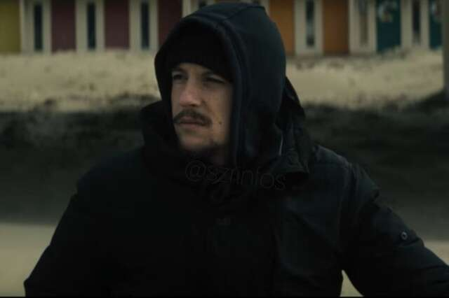

☰
Accueil
Nekfeu
Luther
Nekfeu de retour avec le S-Crew pour le clip "22", avant la sortie de l'album "SZR 2001"
Nekfeu et le S-Crew de retour avec un nouvel album

Nekfeu rend hommage à Népal avec le clip de "Sundance"